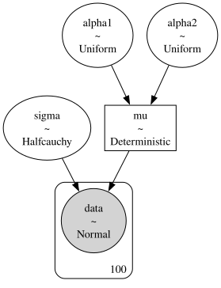
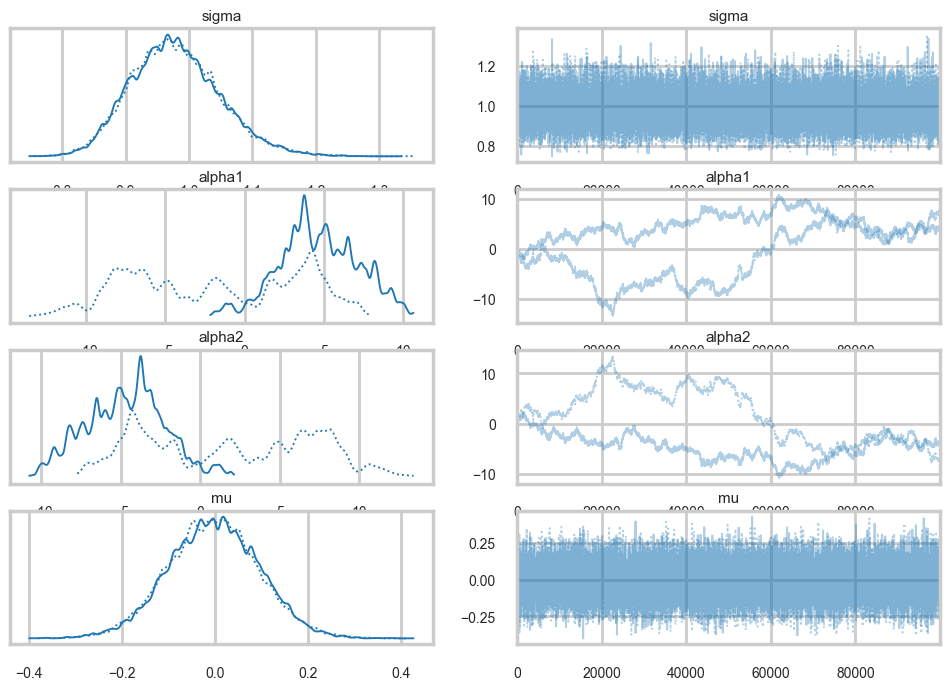
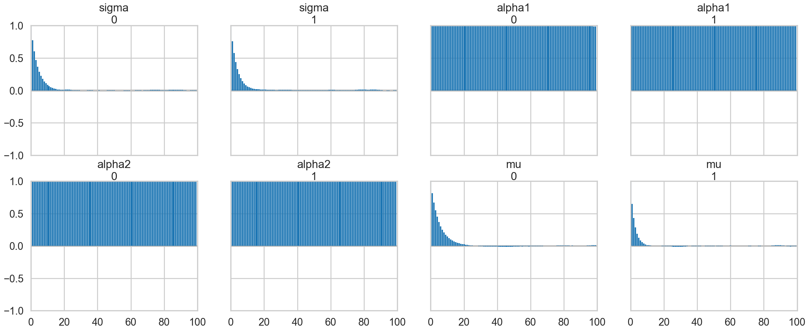
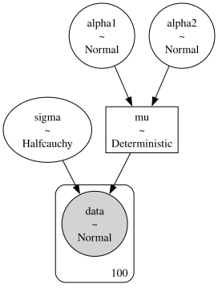
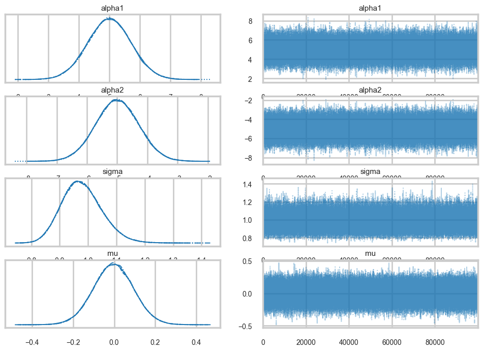

%matplotlib inline
import numpy as np
import scipy as sp
import matplotlib as mpl
import matplotlib.cm as cm
import matplotlib.pyplot as plt
import pandas as pd
pd.set_option('display.width', 500)
pd.set_option('display.max_columns', 100)
pd.set_option('display.notebook_repr_html', True)
import seaborn as sns
sns.set_style("whitegrid")
sns.set_context("poster")Identifiability in Bayesian Models
How parameter redundancy breaks MCMC convergence — and how priors can help.
bayesian
mcmc
models
statistics
Explores how unidentifiable parameters cause MCMC samplers to fail, even when derived quantities converge perfectly. Demonstrates convergence diagnostics that reveal the problem and shows why informative priors are only a partial solution.
We generate some test data from \(N(0,1)\):
from scipy.stats import norm
data = norm.rvs(size=100)
dataarray([-1.40705399, 0.47855778, -0.09668042, 1.73340459, -0.0935003 ,
1.51884902, 0.14321649, -0.97385946, -1.25932683, -0.11006569,
0.39172028, -0.28017972, -1.1848513 , 0.7813908 , 1.21234791,
0.58837838, 0.44120785, -1.31492176, 0.56251823, -1.17382197,
-0.5036201 , 0.66069273, 0.9170503 , 0.0818321 , -0.39673409,
-0.17703474, 0.622938 , -0.31216903, -0.76925065, -1.27985395,
0.25207792, -0.71459936, -1.5035201 , -0.20299391, 1.9505443 ,
1.82787502, 0.10564024, -0.65272199, 0.11243971, 1.32859278,
1.07419161, 1.54344363, 0.47665397, 0.83532311, -1.16837571,
-0.66616421, -1.5110644 , -0.88473802, -1.30381742, 1.09177324,
-0.34623827, 1.04072798, -0.40245543, -0.93406504, -0.23590713,
-0.90397347, -2.04925936, 1.19272474, 0.72976297, 0.12442893,
-1.38611462, -1.11220143, -1.41744909, -0.26507423, 0.46588182,
-1.33920462, -1.44011436, -0.62538301, -0.54746824, 2.14935439,
0.69735202, 0.85241117, 0.47595123, 0.05334232, -0.0822768 ,
-0.52292048, -0.57991741, 0.48867043, 0.85620906, -0.82954922,
1.14262662, -0.1381081 , -0.92574713, 0.59721557, -0.19176936,
0.84759029, 0.35331409, 1.58063441, -0.9334769 , -0.6522197 ,
-0.69524332, -1.30607046, -0.62902851, 1.1504571 , 0.27805355,
2.46018131, -0.20520832, 1.15109449, 0.5690628 , 0.30671181])We fit this data using the following model:
\[ y \sim N(\mu, \sigma)\\ \mu = \alpha_1 + \alpha_2\\ \alpha_1 \sim Unif(-\infty, \infty)\\ \alpha_2 \sim Unif(-\infty, \infty)\\ \sigma \sim HalfCauchy(0,1) \]
import pymc as pm
import arviz as azIn our sampler, we have chosen cores=2 which allows us to run on multiple processes, generating two separate chains.
with pm.Model() as ni:
sigma = pm.HalfCauchy("sigma", beta=1)
alpha1=pm.Uniform('alpha1', lower=-10**6, upper=10**6)
alpha2=pm.Uniform('alpha2', lower=-10**6, upper=10**6)
mu = pm.Deterministic("mu", alpha1 + alpha2)
y = pm.Normal("data", mu=mu, sigma=sigma, observed=data)
stepper=pm.Metropolis()
traceni = pm.sample(100000, step=stepper, cores=2)Multiprocess sampling (2 chains in 2 jobs)
CompoundStep
>Metropolis: [sigma]
>Metropolis: [alpha1]
>Metropolis: [alpha2]/Users/rahul/Library/Caches/uv/archive-v0/-9zMAs8POxRAxupzaV9ft/lib/python3.14/site-packages/rich/live.py:260:
UserWarning: install "ipywidgets" for Jupyter support
warnings.warn('install "ipywidgets" for Jupyter support')
Sampling 2 chains for 1_000 tune and 100_000 draw iterations (2_000 + 200_000 draws total) took 12 seconds.
We recommend running at least 4 chains for robust computation of convergence diagnostics
The rhat statistic is larger than 1.01 for some parameters. This indicates problems during sampling. See https://arxiv.org/abs/1903.08008 for details
The effective sample size per chain is smaller than 100 for some parameters. A higher number is needed for reliable rhat and ess computation. See https://arxiv.org/abs/1903.08008 for detailspm.model_to_graphviz(ni)
az.summary(traceni)| mean | sd | hdi_3% | hdi_97% | mcse_mean | mcse_sd | ess_bulk | ess_tail | r_hat | |
|---|---|---|---|---|---|---|---|---|---|
| sigma | 0.979 | 0.070 | 0.850 | 1.111 | 0.000 | 0.000 | 25548.0 | 27098.0 | 1.00 |
| alpha1 | 1.426 | 5.276 | -9.282 | 8.457 | 3.263 | 1.436 | 3.0 | 26.0 | 1.73 |
| alpha2 | -1.429 | 5.275 | -8.445 | 9.305 | 3.263 | 1.436 | 3.0 | 25.0 | 1.73 |
| mu | -0.003 | 0.098 | -0.181 | 0.186 | 0.001 | 0.000 | 26626.0 | 27051.0 | 1.00 |
az.plot_trace(traceni);
Look at our traces for \(\alpha_1\) and \(\alpha_2\). These are bad, and worse, they look entirely different for two chains. Despite this, \(\mu\) looks totally fine. Our trac
df=traceni.posterior.to_dataframe()
df.corr()| sigma | alpha1 | alpha2 | mu | |
|---|---|---|---|---|
| sigma | 1.000000 | 0.002777 | -0.002880 | -0.005532 |
| alpha1 | 0.002777 | 1.000000 | -0.999828 | 0.021611 |
| alpha2 | -0.002880 | -0.999828 | 1.000000 | -0.003077 |
| mu | -0.005532 | 0.021611 | -0.003077 | 1.000000 |
Just like in our uncentered regression example, we have \(\alpha_1\) and \(\alpha_2\) sharing information: they are totally negatively correlated and unidentifiable. Indeed our intuition probably told us as much.
az.plot_autocorr(traceni);
A look at the effective number of samples using two chains tells us that we have only one effective sample for \(\alpha_1\) and \(\alpha_2\).
az.ess(traceni)<xarray.Dataset> Size: 32B
Dimensions: ()
Data variables:
sigma float64 8B 2.555e+04
alpha1 float64 8B 3.074
alpha2 float64 8B 3.073
mu float64 8B 2.663e+04
Attributes:
created_at: 2026-03-06T18:44:19.320198+00:00
arviz_version: 0.23.4
inference_library: pymc
inference_library_version: 5.28.1
sampling_time: 12.227087020874023
tuning_steps: 1000The Gelman-Rubin statistic is awful for them. No convergence.
az.rhat(traceni)<xarray.Dataset> Size: 32B
Dimensions: ()
Data variables:
sigma float64 8B 1.0
alpha1 float64 8B 1.731
alpha2 float64 8B 1.732
mu float64 8B 1.0
Attributes:
created_at: 2026-03-06T18:44:19.320198+00:00
arviz_version: 0.23.4
inference_library: pymc
inference_library_version: 5.28.1
sampling_time: 12.227087020874023
tuning_steps: 1000Its going to be hard to break this unidentifiability. We try by forcing \(\alpha_2\) to be negative in our prior
with pm.Model() as ni2:
sigma = pm.HalfCauchy("sigma", beta=1)
alpha1=pm.Normal('alpha1', mu=5, sigma=1)
alpha2=pm.Normal('alpha2', mu=-5, sigma=1)
mu = pm.Deterministic("mu", alpha1 + alpha2)
y = pm.Normal("data", mu=mu, sigma=sigma, observed=data)
#stepper=pm.Metropolis()
#traceni2 = pm.sample(100000, step=stepper, cores=2)
traceni2 = pm.sample(100000)Initializing NUTS using jitter+adapt_diag...
Multiprocess sampling (4 chains in 4 jobs)
NUTS: [sigma, alpha1, alpha2]/Users/rahul/Library/Caches/uv/archive-v0/-9zMAs8POxRAxupzaV9ft/lib/python3.14/site-packages/rich/live.py:260:
UserWarning: install "ipywidgets" for Jupyter support
warnings.warn('install "ipywidgets" for Jupyter support')
Sampling 4 chains for 1_000 tune and 100_000 draw iterations (4_000 + 400_000 draws total) took 66 seconds.pm.model_to_graphviz(ni2)
Notice we are using the built in NUTS sampler. It takes longer but explores the distributions far better. This is directly related to our priors imposing regions. I could not even run the previous sampler in any reasonable time in NUTS.
az.plot_trace(traceni2);
Our extremely strong priors have helped us do a much better job.
az.summary(traceni2)| mean | sd | hdi_3% | hdi_97% | mcse_mean | mcse_sd | ess_bulk | ess_tail | r_hat | |
|---|---|---|---|---|---|---|---|---|---|
| alpha1 | 5.000 | 0.710 | 3.679 | 6.354 | 0.002 | 0.002 | 127028.0 | 147579.0 | 1.0 |
| alpha2 | -5.003 | 0.710 | -6.331 | -3.655 | 0.002 | 0.002 | 127359.0 | 147791.0 | 1.0 |
| sigma | 0.979 | 0.070 | 0.849 | 1.111 | 0.000 | 0.000 | 176191.0 | 167933.0 | 1.0 |
| mu | -0.004 | 0.098 | -0.189 | 0.180 | 0.000 | 0.000 | 418836.0 | 308070.0 | 1.0 |
Our effective sample size is still poor and our traces still look dodgy, but things are better.
az.ess(traceni2)<xarray.Dataset> Size: 32B
Dimensions: ()
Data variables:
alpha1 float64 8B 1.27e+05
alpha2 float64 8B 1.274e+05
sigma float64 8B 1.762e+05
mu float64 8B 4.188e+05
Attributes:
created_at: 2026-03-06T18:45:36.679458+00:00
arviz_version: 0.23.4
inference_library: pymc
inference_library_version: 5.28.1
sampling_time: 66.3943829536438
tuning_steps: 1000az.rhat(traceni2)<xarray.Dataset> Size: 32B
Dimensions: ()
Data variables:
alpha1 float64 8B 1.0
alpha2 float64 8B 1.0
sigma float64 8B 1.0
mu float64 8B 1.0
Attributes:
created_at: 2026-03-06T18:45:36.679458+00:00
arviz_version: 0.23.4
inference_library: pymc
inference_library_version: 5.28.1
sampling_time: 66.3943829536438
tuning_steps: 1000..and this shows in our Gelman-Rubin statistics as well…
traceni2.posterior.to_dataframe().corr()| alpha1 | alpha2 | sigma | mu | |
|---|---|---|---|---|
| alpha1 | 1.000000 | -0.990497 | 0.000240 | 0.063937 |
| alpha2 | -0.990497 | 1.000000 | -0.000245 | 0.073925 |
| sigma | 0.000240 | -0.000245 | 1.000000 | -0.000042 |
| mu | 0.063937 | 0.073925 | -0.000042 | 1.000000 |
..but our unidentifiability is still high when we look at the correlation. This reflects the fundamental un-identifiability and sharing of information in our model since \(\mu = \alpha_1 +\alpha_2\): all the priors do is artificially peg one of the parameters. And once one is pegged the other is too because of the symmetry.